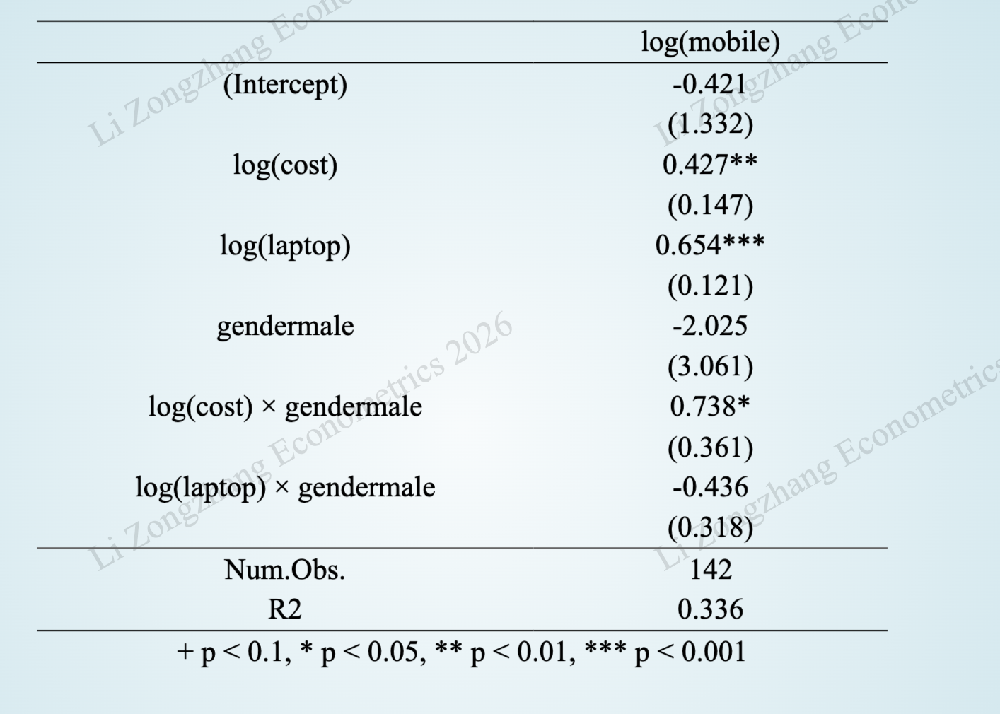
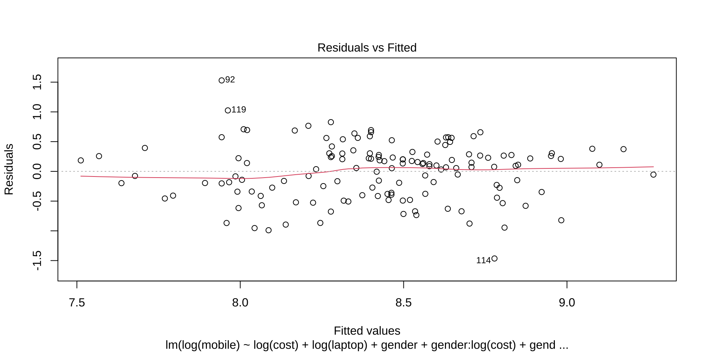

| N | Mean | SD | Median | Min | Max |
|---|---|---|---|---|---|---|
mobile | 142 | 5329.824 | 2828.370 | 5299.500 | 1200.000 | 13999.000 |
laptop | 142 | 6260.627 | 2362.171 | 6000.000 | 1800.000 | 13000.000 |
cost | 142 | 2100.077 | 672.072 | 2000.000 | 800.000 | 5000.000 |
2026-05-26
选拔机制：老师根据演示文稿质量，仅挑选 4 个优胜小组 进行课堂汇报。
提交截止：第14周周日（2026年6月7日）20:00 前提交PDF，逾期直接失去资格。
汇报时长：严格 5分钟。这是一场高效的小组成果展示，而非朗读报告。
严禁内容：代码（第6部分）和个人心得（第7部分）不得放入PPT。
奖励：优胜小组每位成员实验报告加 3-5分。
提交截止：第14周周日（2026年6月7日）20:00
提交要求：
文件格式：PDF（PowerPoint / WPS 转PDF）
文件命名：第#组+组长姓名+班级+主题关键词+小组汇报.pdf
提交位置：QQ群“小组汇报”文件夹
结果公布：第15周周一（2026年6月8日）20:00
汇报时间：第15-16周课堂（严格5分钟，倒计时，超时扣分）
选题的现实意义和创新性
变量选取的经济合理性与数据质量
规范的三线表（严禁直接截图软件输出）
完整的模型诊断(残差图形、多余或遗漏变量的检验、多重共线性 VIF、异方差检验)
系数经济含义的准确解释
第15-16周上课期间
每组严格限时 5 分钟。倒计时软件egg，超时会扣分。
只汇报实验报告的第2-5部分：第6部分（代码）和第7部分（心得体会）无需放进演示文稿中。
建议由1名表达能力最强的组员统一主讲，避免频繁换人浪费交接时间。
一页一个核心信息，避免信息过载
结构简洁：大标题 + 关键要点 + 1张核心图/表
字体大小适当：标题 ≥ 32pt，正文 ≥ 24pt
视觉风格：白底 + 深蓝/深灰文字，极简学术风，禁止花哨动画和无关图片
15-20页左右，确保内容完整且不冗余
自变量 (X) 对 因变量 (Y) 具有显著的[正向促进 / 负向抑制]作用。
不同组别的的…, 自变量 (X) 对 因变量 (Y) 的影响效应不同。
数据来源
变量定义：变量符号、中文名称、数据类型（定量/定性）、单位等。
定量变量：报告所有定量变量的均值、中位数、最小值、最大值、标准差。
定性变量：报告定性变量的频数与百分比分布。
模型表达式
主要回归结果（学术论文三线表）
关键模型诊断
结果解释与讨论
使用公式编辑器录入最优模型。
PowerPoint/WPS 自带公式编辑器：插入/公式
MathPix Snipping Tool（可以将手写公式转换成LaTeX格式）
AI工具（如deepseek）生成LaTeX公式，复制粘贴到PPT中
\[ \begin{aligned} Ln(Sales_{i}) = &B_0 + B_1 Ln(Advertising_{i}) + B_2Ln(Price_{i}) + \\ &B_3Ln(Competition_{i}) + u_{i} \end{aligned} \]
学术论文三线表。包含：变量名、估计系数、标准误、显著性星号（\(*\), \(**\), \(***\)）、样本容量 \(n\)、\(R^2\)。

使用EViews或R的原始输出截图
残差的图形诊断
多余或遗漏变量的检验
多重共线性诊断
异方差诊断
显著的系数：解释其含义
不显著的系数：结合现实探讨可能的原因
结论：用要点形式归纳核心发现
启示：提出 具体、可操作的现实建议（避免“加强监管”“加大投入”等套话）
注意事项
预算约束、笔记本电脑支出与大学生手机消费
——基于性别差异的实证研究
小组成员
班级
2026.6.
研究问题： 哪些因素显著影响大学生的手机消费支出？
假说1： 月生活费越高，手机消费支出越高。
假说2： 购买的笔记本电脑消费支出越高，手机消费支出越高。
假说3： 不同性别群体中，生活费对手机消费支出的弹性不同。
假说4： 即不同性别群体中，笔记本电脑支出对手机消费支出的弹性不同。
数据来源： 26春教学班，157人，问卷星
样本容量： 142
| 变量符号 | 变量名称 | 类型 | 单位 |
|---|---|---|---|
mobile |
手机消费支出 | 定量 | 元 |
laptop |
笔记本电脑消费支出 | 定量 | 元 |
cost |
月生活费 | 定量 | 元 |
male |
性别 | 定性 | 1-男性, 0-女性 |
| N | Mean | SD | Median | Min | Max |
|---|---|---|---|---|---|---|
mobile | 142 | 5329.824 | 2828.370 | 5299.500 | 1200.000 | 13999.000 |
laptop | 142 | 6260.627 | 2362.171 | 6000.000 | 1800.000 | 13000.000 |
cost | 142 | 2100.077 | 672.072 | 2000.000 | 800.000 | 5000.000 |
gender | N | Percent |
|---|---|---|
female | 108 | 76.06 |
male | 34 | 23.94 |
最优模型：双对数模型 + 性别交互项
\[ \begin{aligned} Ln(mobile_{i}) = &B_0 + B_1 Ln(cost_{i}) + B_2 Ln(laptop_{i}) + B_3 male_{i}\\ &B_4 male \times Ln(cost_{i})+ B_5 male_{i} \times Ln(laptop_{i}) + u_{i} \end{aligned} \]
| log(mobile) |
|---|---|
(Intercept) | -0.421 |
(1.332) | |
log(cost) | 0.427** |
(0.147) | |
log(laptop) | 0.654*** |
(0.121) | |
gendermale | -2.025 |
(3.061) | |
log(cost) × gendermale | 0.738* |
(0.361) | |
log(laptop) × gendermale | -0.436 |
(0.318) | |
Num.Obs. | 142 |
R2 | 0.336 |
+ p < 0.1, * p < 0.05, ** p < 0.01, *** p < 0.001 | |

Analysis of Variance Table
Model 1: log(mobile) ~ log(cost) + log(laptop)
Model 2: log(mobile) ~ log(cost) + log(laptop) + gender + gender:log(cost) +
gender:log(laptop)
Res.Df RSS Df Sum of Sq F Pr(>F)
1 139 34.808
2 136 31.859 3 2.9484 4.1953 0.007111 **
---
Signif. codes: 0 '***' 0.001 '**' 0.01 '*' 0.05 '.' 0.1 ' ' 1性别，以及性别与生活费支出的交互项是显著的，不能被视为多余变量。
| 变量 | VIF | |
|---|---|---|
| log(cost) | log(cost) | 1.306 |
| log(laptop) | log(laptop) | 1.389 |
| gender | gender | 1034.346 |
| log(cost):gender | log(cost):gender | 827.482 |
| log(laptop):gender | log(laptop):gender | 883.250 |
多重共线性不严重。
studentized Breusch-Pagan test
data: m2.2
BP = 4.3151, df = 5, p-value = 0.505不存在异方差问题，模型的OLS估计是有效的。
月生活费对女生手机支出的弹性为 0.427，对男生为 1.165 (\(0.427+0.738\))。
笔记本电脑支出对手机支出的弹性约为 0.654，无显著性别差异。
手机使用时长对手机消费无显著影响。
结论
收入效应明显，且存在显著的性别异质性。女生的生活费弹性为 0.427，而男生的生活费弹性高达 1.165。男生在拿到更多生活费时，更倾向于将其迅速转化为手机支出的升级。
笔记本电脑消费与手机消费呈现强协同效应。两群体的电脑支出对手机支出的带动弹性都在 0.654 左右，且男女之间没有显著路径差异（交互项不显著）。
启示
数码厂商的“性别差异化”精准营销策略：男生的手机消费极易受到“可支配资金流”的波动影响。
校园零售可将电脑与手机进行捆绑销售。
敬请批评指正！
经济计量学 | © 2026 , Li Zongzhang